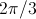
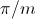
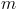
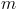
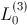
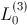
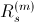
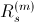
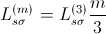

User's Guide
This library contains components for modelling of electromagnetic fundamental wave models for the application in multi phase phase electric machines. The number of phases is not restricted to three. DC machines are (currently) not included in this library. The FundamentalWave library is an alternative approach to the Modelica.Electrical.Machines library. A great advantage of this library is the strict object orientation of the electrical and magnetic components that the electric machines models are composed of. From a didactic point of view this library is very beneficial for students in the field of electrical engineering.
For more details see the concept.
Extends from Modelica.Icons.Information (Icon for general information packages).
| Name | Description |
|---|---|
| Fundamental wave concept | |
| Multi phase windings | |
| Parameters of equivalent machines models | |
| Contact | |
| Release Notes | |
| References |
Fundamental wave concept
The exact magnetic field in the air gap of an electric machine is usually determined by an electro magnetic finite element analysis. The waveform of the magnetic field, e.g., the magnetic potential difference  , consists of a spatial fundamental wave - with respect to an equivalent two pole machine - and additional harmonic waves of different order. The fundamental wave is however dominant in the air gap of an electric machine.
, consists of a spatial fundamental wave - with respect to an equivalent two pole machine - and additional harmonic waves of different order. The fundamental wave is however dominant in the air gap of an electric machine.

|
In the fundamental wave theory only a pure sinusoidal distribution of magnetic quantities is assumed. It is thus assumed that all other harmonic wave effects are not taken into account.

|
The waveforms of the magnetic field quantities, e.g., the magnetic potential difference , can be represented by complex phasor, e.g.,  according to:
according to:

It is important to note that the magnetic potential used in this library always refers to an equivalent two pole machine.

|
The potential and flow quantities of this library are the complex magnetic potential difference and the complex magnetic flux as defined in the basic magnetic port. Due to the sinusoidal distribution of magnetic potential and flux, such a complex phasor representation can be used. This way, the FundamentalWave library can be seen as a spatial extension of the FluxTubes library.
The specific arrangement of windings in electric machines with  pole pairs give rise to sinusoidal dominant magnetic potential wave. The spatial period of this wave is determined by one pole pair
[Mueller70,
Spaeth73].
pole pairs give rise to sinusoidal dominant magnetic potential wave. The spatial period of this wave is determined by one pole pair
[Mueller70,
Spaeth73].
The main components of an electric machine model based on the FundamentalWave library are multi phase and single phase windings, air gap as well as symmetric or salient cage models. The electric machine models provided in this library are based on symmetrical windings in the stator and equivalent two or three phase windings in squirrel cage rotors. Slip ring induction machines may have different phase numbers in the stator and rotor.
The machine models of the FundamentalWave library are currently based on the following assumptions
The term fundamental wave refers to spatial waves of the electro magnetic quantities. This library has no limitations with respect to the waveforms of the time domain signals of any voltages, currents, etc.
Extends from Modelica.Icons.Information (Icon for general information packages).
Multi phase windings
Symmetrical three phases systems of currents (or voltages) consists of three sinusoidal sine waves with with an angular displacement of .
 ,
,
Electrical three phase machines have (usually) symmetrical three phase windings which excite spatial magnetic potential with a spacial displacement of - with respect to the fundamental wave, see [Laughton02]. Such a symmetrical three phase system of currents (or voltages) can be represented by phasors, as depicted in Fig. 1(a). The associated three phase winding is depicted in Fig. 2(a). The winding axis are displaced by :

So there is is a strong coherence between angular displacement in the time and spatial domain which also applies to multi phase systems.

|

|
In symmetrical multi phase systems odd and even phase numbers have to be distinguished.
For a symmetrical multi phase system with  phases the displacement in the time and spatial domain is
phases the displacement in the time and spatial domain is
 ,
as depicted in Fig. 1 and 2.
,
as depicted in Fig. 1 and 2.
Mathematically, this symmetry is expressd in terms of phase currents by:

The orientation of the winding axis of such winding is given by:

In the current implementation of the FundamentalWave library, phase numbers equal
to the power of two are not supported. However, any other multi phase system with even
an phase number, ,
can be recursively split into various symmetrical systems with odd phase numbers, as depicted in Fig. 3 and 4.
The displacement between the two symmetrical systems is
.
A function for calculating the symmetricOrientation is available.

|

|
In a fully symmetrical machine, the orientation of the winding axes and the symmetrical currents (or voltages) phasors have different signs; see Fig. 1 and 2 for odd phase numbers and Fig. 3 and 4 for even phase numbes.
Extends from Modelica.Icons.Information (Icon for general information packages).
Parameters of equivalent machines models
The stator main inductance
 of an

phase induction machine is related with the self inductance of on stator phase,
of an

phase induction machine is related with the self inductance of on stator phase,
 ,
by:
,
by:

Assume a set parameters,
 ,
,
 ,
,
,
,
 ,
of a three phase induction machine and a set of parameters,
,
,
of a three phase induction machine and a set of parameters,
,
 ,
,
 ,
,
of an
phase induction machine. It is also assumed that
,
,
of an
phase induction machine. It is also assumed that
of the three and phase induction machine are equal. In this case the two parameter sets are related by:




This way the same torque is generated and the machine currents are related by:

The same applies for the rotor parameters of a
slip ring induction machine, where the phase number
is simply replaced by
 for transforming equivalent three phase to
phase winding parameters -- at the same nominal rotor voltage and frequency.
for transforming equivalent three phase to
phase winding parameters -- at the same nominal rotor voltage and frequency.
AIMC_DOL_MultiPhase, AIMS_Start_MultiPhase, SMPM_Inverter_MultiPhase, SMEE_Generator_MultiPhase, SMR_Inverter_MultiPhase
Extends from Modelica.Icons.Information (Icon for general information packages).
 Modelica.Magnetic.FundamentalWave.UsersGuide.Contact
Modelica.Magnetic.FundamentalWave.UsersGuide.ContactContact
Christian Kral
Electric Machines, Drives and Systems
1060 Vienna, Austria
email: dr.christian.kral@gmail.com
Anton Haumer
Technical Consulting & Electrical Engineering
3423 St. Andrae-Woerdern, Austria
email: a.haumer@haumer.at
Based on an original idea of Michael Beuschel this library was developed [Beuschel00]. The authors of the FundamentalWave library would like to thank Michael Beuschel for contributing his source code to this library.
The research leading to version 2.0.0 has received funding from the ENIAC Joint Undertaking under grant agreement no. 270693-2 and from the Österreichische Forschungsförderungsgesellschaft mbH under project no. 829420.
Extends from Modelica.Icons.Contact (Icon for contact information).
Release Notes
G=(m/2)*GcRef/effectiveTurns^2 is now replaced by G=(m/2)*GcRef*effectiveTurns^2annotation(Evaluate=true) added to the parameters of the
single phase winding
windingAngle to orientation. The following classes are affected:
modelica:// to all Modelica hyper linksLossPower.png to lossPower.png)tauElectrical, model behavior does not changeExtends from Modelica.Icons.ReleaseNotes (Icon for release notes in documentation).
 Modelica.Magnetic.FundamentalWave.UsersGuide.References
Modelica.Magnetic.FundamentalWave.UsersGuide.ReferencesReferences
| [Beuschel00] | M. Beuschel, " A uniform approach for modelling electrical machines," Modelica Workshop, pp. 101-108, October 23-24, 2000. |
| [Eckhardt82] | H. Eckhardt, Grundzüge der elektrischen Maschinen (in German), B. G. Teubner Verlag, Stuttgart, 1982. |
| [Haumer09] | A. Haumer, and C. Kral, "The AdvancedMachines Library: Loss Models for Electric Machines," Modelica Conference, 2009. |
| [Lang84] | W. Lang, Über die Bemessung verlustarmer Asynchronmotoren mit Käfigläufer für Pulsumrichterspeisung (in German), Doctoral Thesis, Technical University of Vienna, 1984. |
| [Laughton02] | M.A. Laughton, D.F. Warne Electrical Engineer's Reference Book Butterworth Heinemann, 16th edition, ISBN 978-0750646376, 2002 |
| [Li07] | Y. Li, Z. Q. Zhu, D. Howe, and C. M. Bingham, "Modeling of Cross-Coupling Magnetic Saturation in Signal-Injection-Based Sensorless Control of Permanent-Magnet Brushless AC Motors," IEEE Transactions on Magnetics, vol. 43, no. 6, pp. 2552-2554, June 2007. |
| [Mueller70] | G, Müller, Elektrische Maschinen -- Grundlagen, Aufbau und Wirkungsweise (in German), VEB Verlag Technik Berlin, 4th edition, 1970. |
| [Spaeth73] | H. Späth, Elektrische Maschinen -- Eine Einführung in die Theorie des Betriebsverhaltens (in German), Springer-Verlag, Berlin, Heidelberg, New York, 1973. |
Extends from Modelica.Icons.References (Icon for external references).
Automatically generated Fri Oct 02 11:08:14 2015. is the angle of the spatial domain with respect to one pole pair
is the angle of the spatial domain with respect to one pole pair